I personally love Cacio e pepe. In my opinion, cacio e pepe although simple
it packs a punch of flavour with the pecorino, peppercorns, butter, and bucatini.
But enough talking, why dont you try it for yourself?
With only 4 ingredients its as easy to make as this basic website.
Ingredients
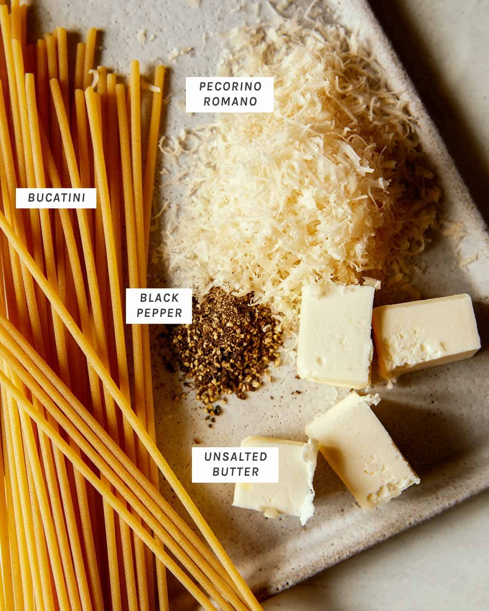
Ingredients to Note:
Pecorino Romano: I recommend using a microplane to grate the cheese.
As the fine grate helps the cheese melt into the dish evenly.
Pasta: As you might've noticed I chose bucatini, which kinda like spaghetti.
Except it's slightly thicker and in the form of a tube, which will give the dish more body.
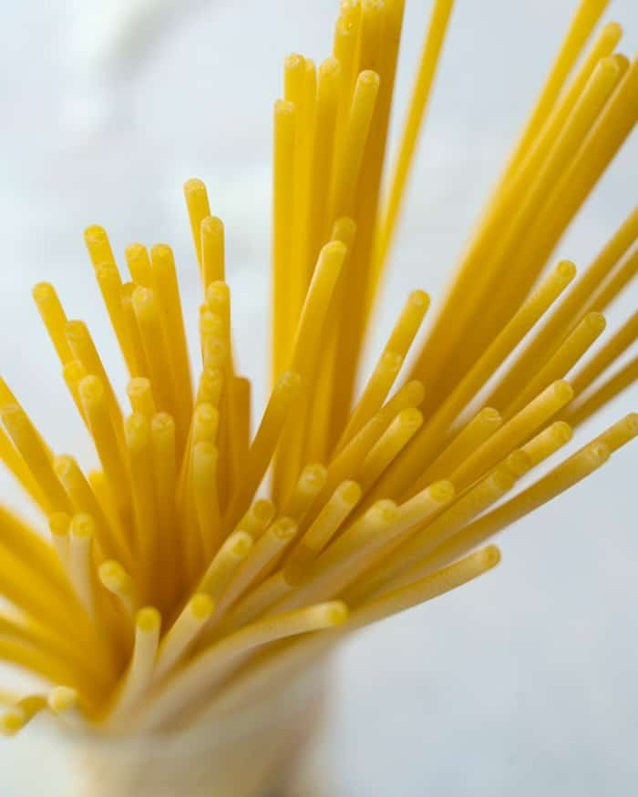
Process of elaboration
Bring a large por of water to boil and generously add salt. Add pasta and cook until al dente.
Reserve some pasta water and cool slightly.
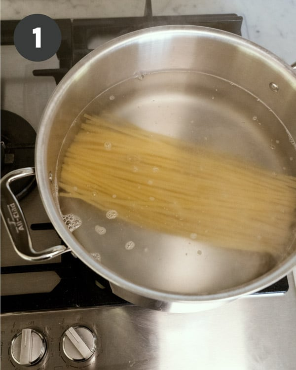 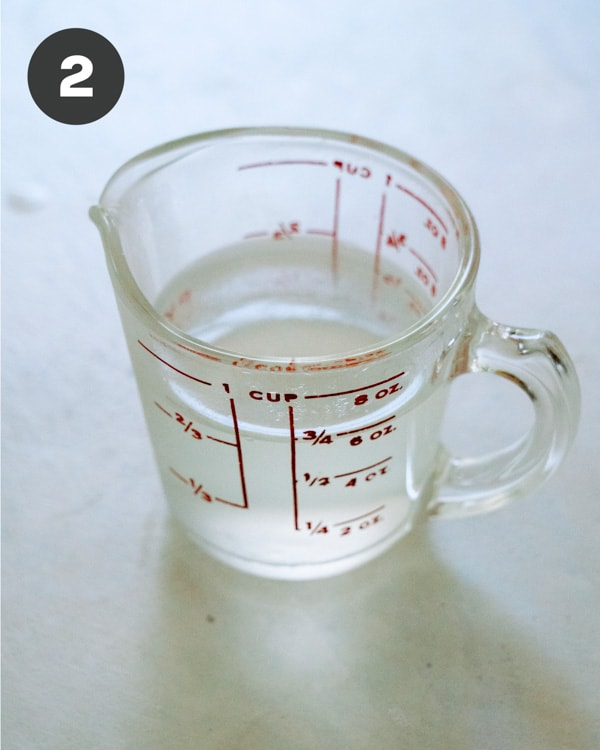
Drain pasta in a colander
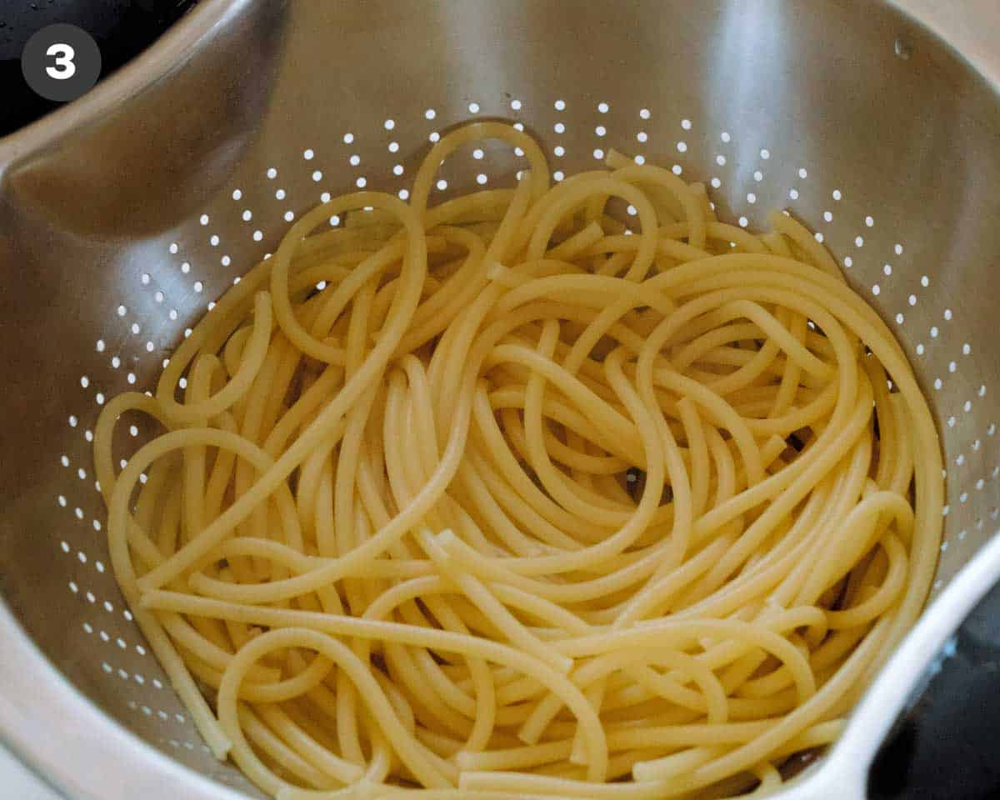
Place skillet over medium heat and add pasta back into pot.
Add reserved pasta water and butter.
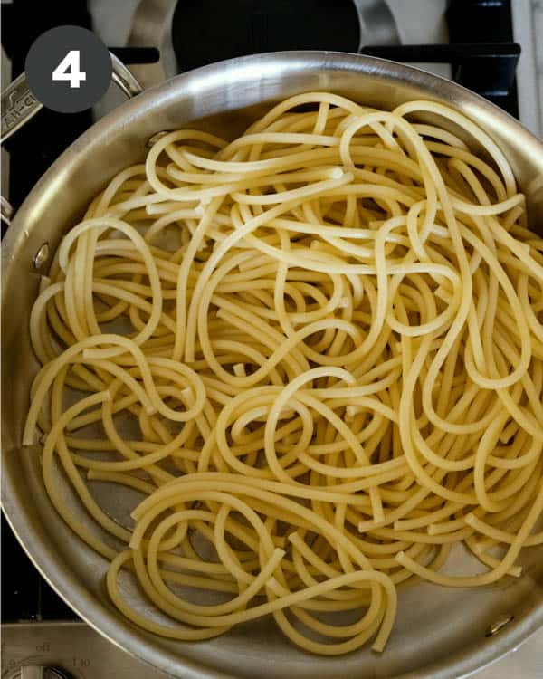 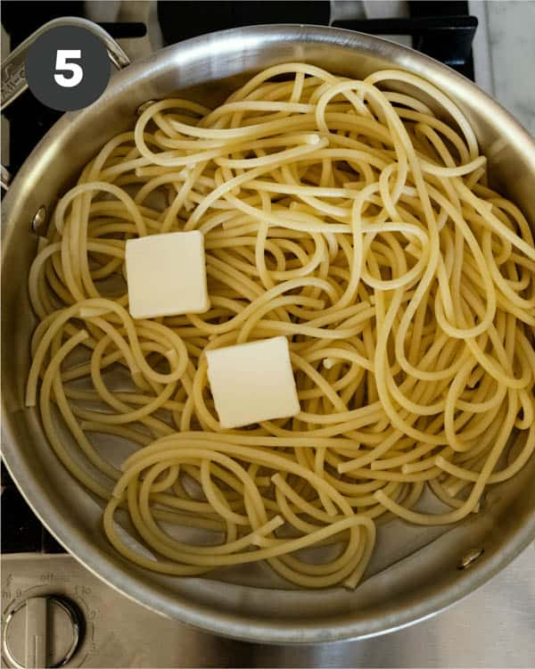
Toss together.
Add grated cheese and black pepper and continue to toss together
so the sauce blends and becomes smooth and creamy.
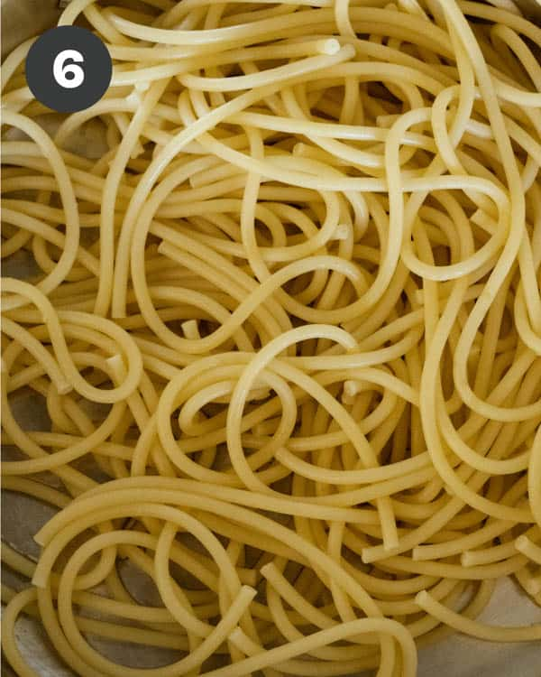 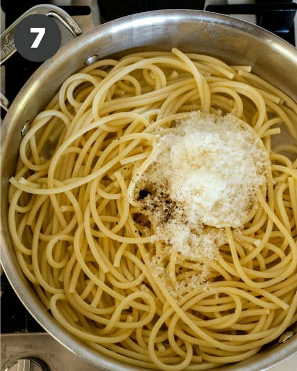
Top with more grated cheese and serve.
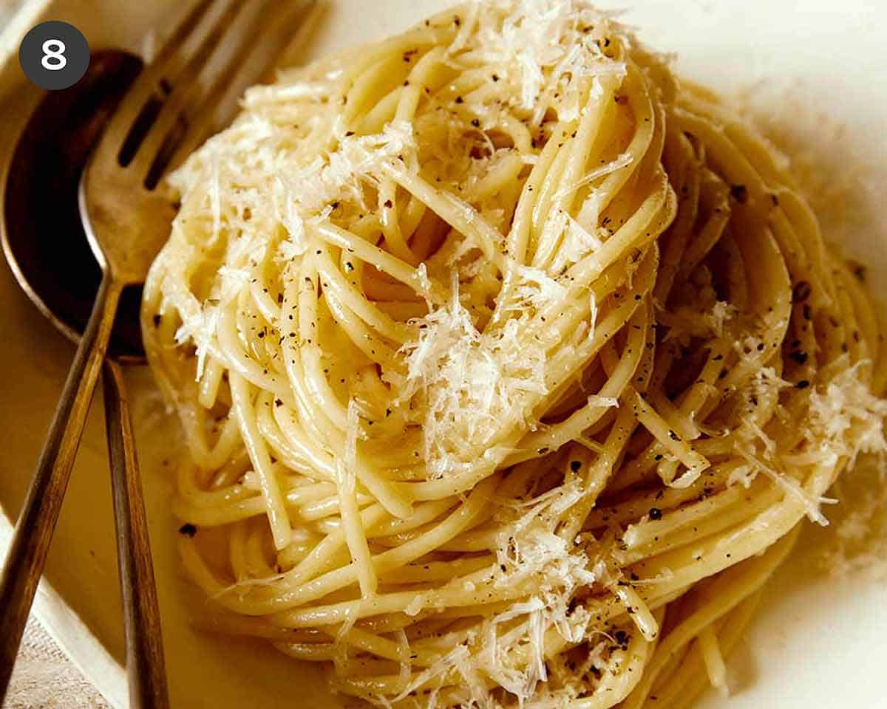
Cacio e pepe variations
Pecorino Romano is a hard, italian sheep's milk cheese. It has a sharp, rich nutty flavor,
making it the perfect cheese for this simple pasta dish. If you dont have it or can't find it
you can also use Parmigiano-Reggiano, it should work just fine.
If you wish to make this recipe gluten free... just don't eat pasta.
You can also add a protein to the pasta like sautéed shrimp or chicken.
Bring some heat to the dish with a pinch of crushed pepper flakes.

 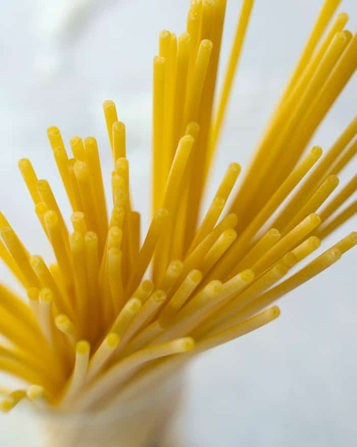
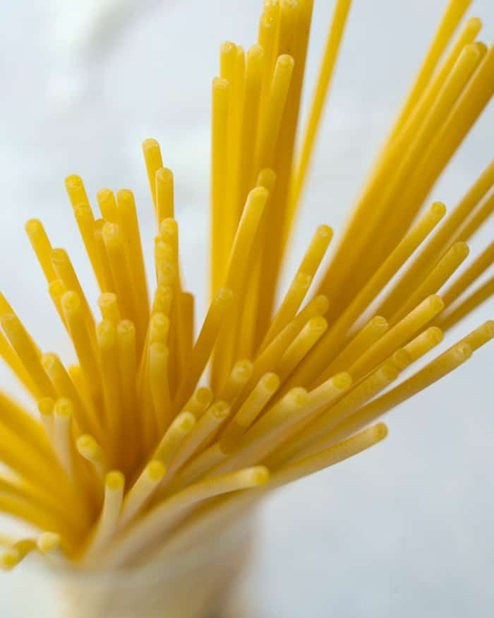